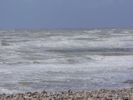
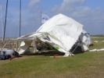
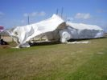

Cayeux, juste au sud de l'embouchure de la Somme... Des "cayeux", en picard ce sont des cailloux, et on voit pourquoi ! La municipalité a même fait recouvrir la pelouse de galets sur une grande partie, peut-être pour éviter que les vagues ne courent jusqu'aux maisons en cas de tempête ?
Cayeux, juste au sud de l'embouchure de la Somme... Des "cayeux", en picard ce sont des cailloux, et on voit pourquoi ! La municipalité a même fait recouvrir la pelouse de galets sur une grande partie, peut-être pour éviter que les vagues ne courent jusqu'aux maisons en cas de tempête ? Il reste une partie gazonnée qui servira de terrain de vol aux pilotables; qui ne peuvent pratiquer dans le galet profond. Les camping-cars sont autorisés exceptionnellement sur le bord de la Promenade et ils sont déjà bien nombreux ce vendredi !
Il reste une partie gazonnée qui servira de terrain de vol aux pilotables; qui ne peuvent pratiquer dans le galet profond. Les camping-cars sont autorisés exceptionnellement sur le bord de la Promenade et ils sont déjà bien nombreux ce vendredi ! Pour occuper ce qui reste de l'après-midi, à part discuter, je fais voler mon Rokkaku dans un ciel tout à moi !
Pour occuper ce qui reste de l'après-midi, à part discuter, je fais voler mon Rokkaku dans un ciel tout à moi ! La plupart des participants sont arrivés, et un petit pot s'organise pour offrir un meilleur espace aux discussions !
La plupart des participants sont arrivés, et un petit pot s'organise pour offrir un meilleur espace aux discussions ! Samedi matin, ciel un peu gris mais il y a un bon vent et les cerfs-volants montent.
Samedi matin, ciel un peu gris mais il y a un bon vent et les cerfs-volants montent. Michel Bérard est venu sur son mini-scooter. Il a déjà élevé à des altitudes inavouables un Flare rouge et un Pantenier...
Michel Bérard est venu sur son mini-scooter. Il a déjà élevé à des altitudes inavouables un Flare rouge et un Pantenier... Au sol, les Jardins du Vent s'installent sur le terrain longeant la rue, les bateaux ayant bloqué une partie de notre ancien terrain. On revoit avec plaisir Patrick Guilbert et Annick qui plantent des structures toujours originales, principalement à base de matériaux naturels...
Au sol, les Jardins du Vent s'installent sur le terrain longeant la rue, les bateaux ayant bloqué une partie de notre ancien terrain. On revoit avec plaisir Patrick Guilbert et Annick qui plantent des structures toujours originales, principalement à base de matériaux naturels... Des constructions de bois flottés artistiquement assemblés, rappelant sans en être des objets classiques !
Des constructions de bois flottés artistiquement assemblés, rappelant sans en être des objets classiques ! Joël Goupil fait fonctionner son théâtroscope qui présente une petite séquence de cerfs-volant acrobatique à l'aide de vues qui se succèdent mécaniquement... au rythme du vent !
Joël Goupil fait fonctionner son théâtroscope qui présente une petite séquence de cerfs-volant acrobatique à l'aide de vues qui se succèdent mécaniquement... au rythme du vent ! Emmanuel Duba présente ses chats habituels, avec quelques innovations comme à chaque fois...
Emmanuel Duba présente ses chats habituels, avec quelques innovations comme à chaque fois... Un revenant encore, Didier Ferment a monté des structures de branches et des bambous-flûtes..
Un revenant encore, Didier Ferment a monté des structures de branches et des bambous-flûtes.. Les bambous-flûtes sont de gros bambous dont chaque tranche reste isolée, mais comporte une fente ou le vent joue comme avec une flûte traversière, un peu modulée par la force du vent !
Les bambous-flûtes sont de gros bambous dont chaque tranche reste isolée, mais comporte une fente ou le vent joue comme avec une flûte traversière, un peu modulée par la force du vent ! Sur la crête de la barre de galets, un chemin de planches permet de marcher aisément, devant les pittoresques cabines aux noms soit de lieux (Valenciennes, La Mollière, Limoges, etc.) soit ceux inventés par les possesseurs à l'année (Sam'suffit évidemment, Ma petite maison, etc)...
Sur la crête de la barre de galets, un chemin de planches permet de marcher aisément, devant les pittoresques cabines aux noms soit de lieux (Valenciennes, La Mollière, Limoges, etc.) soit ceux inventés par les possesseurs à l'année (Sam'suffit évidemment, Ma petite maison, etc)...  A part le grand espace de galets, il existe aussi, de l'autre côté du parc des bateaux, un petit terrain en herbe dont profitent plusieurs hôtes !
A part le grand espace de galets, il existe aussi, de l'autre côté du parc des bateaux, un petit terrain en herbe dont profitent plusieurs hôtes ! Dominique Miquet est venu et achève de monter son parterre, en particulier les objets mobiles en tôle comme les tracteurs ou ses roues doubles contrarotatives du même métal qui lui plaisent beaucoup !
Dominique Miquet est venu et achève de monter son parterre, en particulier les objets mobiles en tôle comme les tracteurs ou ses roues doubles contrarotatives du même métal qui lui plaisent beaucoup ! Sur le bord du terrain en herbe, des tentes le long de la rue et quelques objets du vent comme cet original oiseau superbement coloré bâti autour d'un tube courbé en arche et au corps gonflé par le vent...
Sur le bord du terrain en herbe, des tentes le long de la rue et quelques objets du vent comme cet original oiseau superbement coloré bâti autour d'un tube courbé en arche et au corps gonflé par le vent... On retrouve des classiques comme de grandes pieuvres qui impressionnent toujours ou des Flow-Forms, mais aussi des cerfs-volants comme le Delta-Conyne, un cellulaire, ou mon Albatros en haut à gauche...
On retrouve des classiques comme de grandes pieuvres qui impressionnent toujours ou des Flow-Forms, mais aussi des cerfs-volants comme le Delta-Conyne, un cellulaire, ou mon Albatros en haut à gauche... Rien que des cerfs-volants à barres, ici, deltas divers, Conyne, et une sorte de cylindre à facettes !
Rien que des cerfs-volants à barres, ici, deltas divers, Conyne, et une sorte de cylindre à facettes ! Yves le Pirate a planté son mur de drapeaux... de pirates aux thèmes variés comme le rose pour sa petite-fille !
Yves le Pirate a planté son mur de drapeaux... de pirates aux thèmes variés comme le rose pour sa petite-fille ! Vu d'ici, il y a une belle masse de cerfs-volants... et de cervolistes, les Ventcourtois ayant augmenté jusqu'au limites faisables le nombre de cervolistes, et même un peu plus...
Vu d'ici, il y a une belle masse de cerfs-volants... et de cervolistes, les Ventcourtois ayant augmenté jusqu'au limites faisables le nombre de cervolistes, et même un peu plus... Bruno Tondellier qui a été le créateur du festival et qui commente au micro, prépare ici un lâcher de bonbons. Ceux-ci sont dotés de petites ailettes qui ralentissent la chute, la répartissent sur une plus grande surface et évitent les ruées génératrices de chocs entre fronts....
Bruno Tondellier qui a été le créateur du festival et qui commente au micro, prépare ici un lâcher de bonbons. Ceux-ci sont dotés de petites ailettes qui ralentissent la chute, la répartissent sur une plus grande surface et évitent les ruées génératrices de chocs entre fronts....  Voila, la navette monte avec sa charge tentante et couvée par des dizaines d'yeux enfantins....
Voila, la navette monte avec sa charge tentante et couvée par des dizaines d'yeux enfantins.... Les bonbons papillotés laissent au vent le temps d'agir, s'égaillent sur une bonne surface et ne descendent pas trop vite....
Les bonbons papillotés laissent au vent le temps d'agir, s'égaillent sur une bonne surface et ne descendent pas trop vite.... Dès le samedi, un bon public est venu, profitant du temps correct malgré quelques nuages.
Dès le samedi, un bon public est venu, profitant du temps correct malgré quelques nuages. Le terrain de caillou s'étend à perte de vue, pas de problème pour trouver une place assez dégagée pour voler ! Je suis toujours admiratif devant le courage des plantes qui prospèrent sans avoir été plantées, sur ces terrains sans terre, plus ou moins salés et où l'eau doit s'infiltrer de suite !
Le terrain de caillou s'étend à perte de vue, pas de problème pour trouver une place assez dégagée pour voler ! Je suis toujours admiratif devant le courage des plantes qui prospèrent sans avoir été plantées, sur ces terrains sans terre, plus ou moins salés et où l'eau doit s'infiltrer de suite ! Jean-Michel Gadomski a mis en l'air son Exocet, poisson-volant qu'il peut même piloter certains jours quand il a monté 2 lignes !
Jean-Michel Gadomski a mis en l'air son Exocet, poisson-volant qu'il peut même piloter certains jours quand il a monté 2 lignes ! Un autre poisson, d'origine Peter Lynn pour le dessin, assez harmonieux bien qu'il ne copie pas beaucoup la nature...
Un autre poisson, d'origine Peter Lynn pour le dessin, assez harmonieux bien qu'il ne copie pas beaucoup la nature... J'ai bien aimé ce Calmar avec ses couleurs violentes et très artificielles, mais bien harmonisées ! La forme est différente de celle des calmars "classiques", avec un corps et une nageoire plus importants.
J'ai bien aimé ce Calmar avec ses couleurs violentes et très artificielles, mais bien harmonisées ! La forme est différente de celle des calmars "classiques", avec un corps et une nageoire plus importants. William Hugot, des Gwenn Ha Du, a créé son propre jardin du vent, dans son style provocateur habituel, en travers du chemin des piétons !
William Hugot, des Gwenn Ha Du, a créé son propre jardin du vent, dans son style provocateur habituel, en travers du chemin des piétons ! Dimanche, il n'est que 10 h du matin, mais beaucoup sont déjà en l'air, en particulier le petit dragon amusant de Patrick L'Higuinen et le beau cheval rose !
Dimanche, il n'est que 10 h du matin, mais beaucoup sont déjà en l'air, en particulier le petit dragon amusant de Patrick L'Higuinen et le beau cheval rose ! A 10 h 30, la parade dans la ville a démarré, avec toutes les bannières possibles dont l'immense drapeau breton de William.
A 10 h 30, la parade dans la ville a démarré, avec toutes les bannières possibles dont l'immense drapeau breton de William. Nous avons quitté la Promenade pour les petites rues. Les Ventcourtois n'ont pas pu obtenir d'orchestre, mais Jeremy a monté un chariot avec des enceintes, un ampli, un lecteur moderne et... un groupe électrogène, la sono ne tombera pas à court de courant !
Nous avons quitté la Promenade pour les petites rues. Les Ventcourtois n'ont pas pu obtenir d'orchestre, mais Jeremy a monté un chariot avec des enceintes, un ampli, un lecteur moderne et... un groupe électrogène, la sono ne tombera pas à court de courant ! Retour de la parade, il reste un moment avant le déjeuner, j'essaye ma Grue Cendrée qui se comporte bien dès qu'il y a assez de vent...
Retour de la parade, il reste un moment avant le déjeuner, j'essaye ma Grue Cendrée qui se comporte bien dès qu'il y a assez de vent... Pendant la parade, le vent étant régulier, beaucoup ont continué à voler, même s'ils ont défilé...
Pendant la parade, le vent étant régulier, beaucoup ont continué à voler, même s'ils ont défilé... Apéritif officiel avant le déjeuner. Nous ferons donc connaissance avec Mr le maire et Mr le député, ici devant les verres qui dessinent les 20 ans de la rencontre sur ce terrain. Ils font chacun leur petit discours pour remercier l'organisation et les cervolistes. Mais le plus important, ils confirment qu'ils vont continuer à subventionner la rencontre, qu'ils souhaiteraient même voir prendre plus d'importance...
Apéritif officiel avant le déjeuner. Nous ferons donc connaissance avec Mr le maire et Mr le député, ici devant les verres qui dessinent les 20 ans de la rencontre sur ce terrain. Ils font chacun leur petit discours pour remercier l'organisation et les cervolistes. Mais le plus important, ils confirment qu'ils vont continuer à subventionner la rencontre, qu'ils souhaiteraient même voir prendre plus d'importance... Toute l'équipe des bénévoles pose, sous les applaudissements de remerciement des cervolistes qui n'ont manqué de rien, et surtout pas de convivialité, grâce à eux....
Toute l'équipe des bénévoles pose, sous les applaudissements de remerciement des cervolistes qui n'ont manqué de rien, et surtout pas de convivialité, grâce à eux.... Après midi, le vent est bon, on voit sortir de nouveaux engins comme ce grand bol que j'ai pris encadrant le poisson, la baleine bleue, des hippocampes !
Après midi, le vent est bon, on voit sortir de nouveaux engins comme ce grand bol que j'ai pris encadrant le poisson, la baleine bleue, des hippocampes ! Et moi et moi et moi, avec mon vol de grues bien stable, pour une fois (il faut dire que je travaille constamment les réglages)...
Et moi et moi et moi, avec mon vol de grues bien stable, pour une fois (il faut dire que je travaille constamment les réglages)... Les Ventcourtois, je pense, ont présenté cette maquette de la prise de vue par cerf-volant, avec un aérophotographe, son cerf-volant, et l'appareil à mi-hauteur...
Les Ventcourtois, je pense, ont présenté cette maquette de la prise de vue par cerf-volant, avec un aérophotographe, son cerf-volant, et l'appareil à mi-hauteur... Au dîner, le cuistot (que vous reconnaissez ?) et ses aides ont servi "à la place" un cassoulet spécial avec des pommes de terre...
Au dîner, le cuistot (que vous reconnaissez ?) et ses aides ont servi "à la place" un cassoulet spécial avec des pommes de terre... Après dîner, le vent est devenu modéré et venant de terre. Conditions idéales pour un lâcher de lanternes montgolfières... A l'insu de Jean-Claude, les cervolistes en ont tous signé une à la mémoire d'Antoinette, l'épouse de Jean-Claude qui a été très ému de voir partir cet in memoriam au ciel...
Après dîner, le vent est devenu modéré et venant de terre. Conditions idéales pour un lâcher de lanternes montgolfières... A l'insu de Jean-Claude, les cervolistes en ont tous signé une à la mémoire d'Antoinette, l'épouse de Jean-Claude qui a été très ému de voir partir cet in memoriam au ciel... Beaucoup d'autres ont suivi, il y en avait une cinquantaine prévues !
Beaucoup d'autres ont suivi, il y en avait une cinquantaine prévues ! Puis elles se sont multipliées en l'air créant une image un peu magique au-dessus de la Manche dans le coucher de soleil...
Puis elles se sont multipliées en l'air créant une image un peu magique au-dessus de la Manche dans le coucher de soleil... Lundi, le vent paraissant suffisant et pas trop fort, j'ai lancé Megoel que les mêmes dames ont apprécié aussi !
Lundi, le vent paraissant suffisant et pas trop fort, j'ai lancé Megoel que les mêmes dames ont apprécié aussi ! Même si nous sommes lundi, pas mal sont restés et continuent à faire voler, même s'il n'y a plus de public, juste par plaisir...
Même si nous sommes lundi, pas mal sont restés et continuent à faire voler, même s'il n'y a plus de public, juste par plaisir... Un grand trou de ciel bleu, Megoel apparaît bien détaché. Il est bien stable, je peux aller déjeuner...
Un grand trou de ciel bleu, Megoel apparaît bien détaché. Il est bien stable, je peux aller déjeuner... Je reviens de déjeuner, il est toujours là-haut mais me semble faiblir un peu. Je passe sur les planches devant les cabines, et quand j'arrive au bout, plus de Megoel ! Il a profité de ce que je ne pouvais plus le voir pour tomber à terre, sur la route en plus ! Heureusement, un cervoliste me l'a ramené sur la surface. Bon, s'il n'y a plus de vent, je replie et je vais reprendre la route... Mais le vent remonte. Tant pis, j'ai tout plié et il ne se monte pas en 10 s, le temps de dire au revoir et de remercier l'équipe et je prends le cap de chez moi après ce bon week-end...
Je reviens de déjeuner, il est toujours là-haut mais me semble faiblir un peu. Je passe sur les planches devant les cabines, et quand j'arrive au bout, plus de Megoel ! Il a profité de ce que je ne pouvais plus le voir pour tomber à terre, sur la route en plus ! Heureusement, un cervoliste me l'a ramené sur la surface. Bon, s'il n'y a plus de vent, je replie et je vais reprendre la route... Mais le vent remonte. Tant pis, j'ai tout plié et il ne se monte pas en 10 s, le temps de dire au revoir et de remercier l'équipe et je prends le cap de chez moi après ce bon week-end...
La mer est bien écumeuse et brasse les galets !
Le malheureux Barnum qui nous a si bien abrités a beaucoup souffert, malgré le sanglage !
La partie droite a été protégée par la partie gauche, et la toile n'a pas l'air d'avoir beaucoup souffert, peut-être quelques pattes ou fourreaux arrachés !